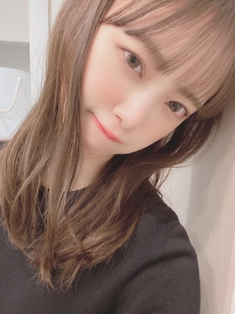
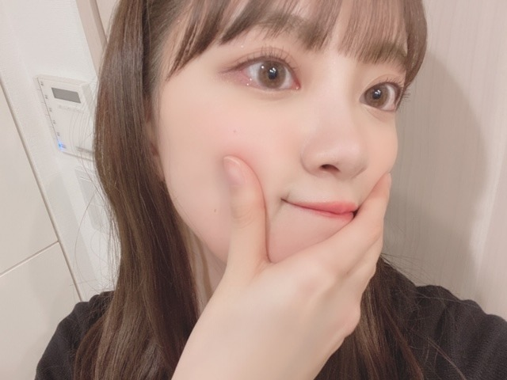
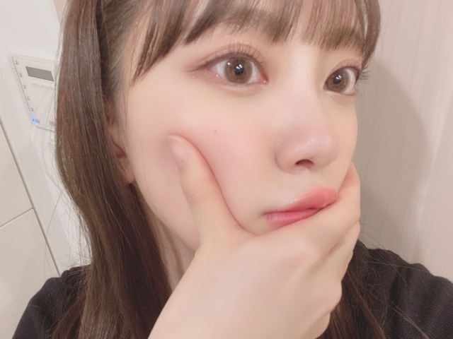
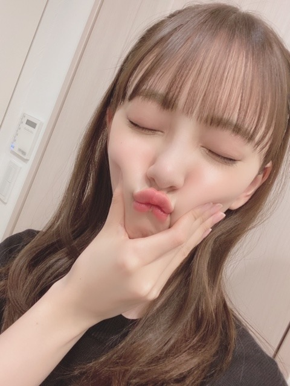
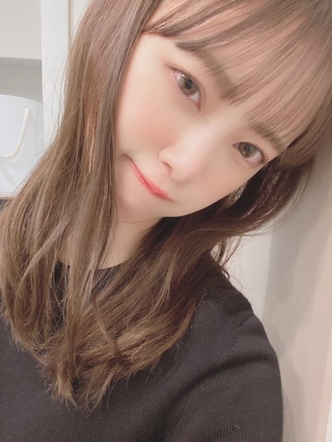
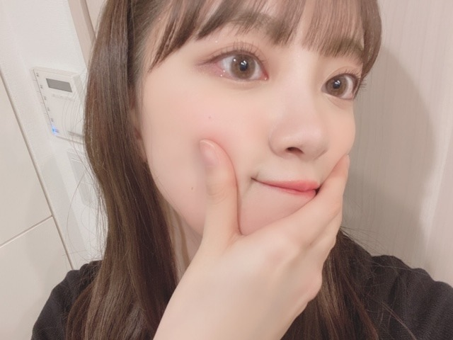
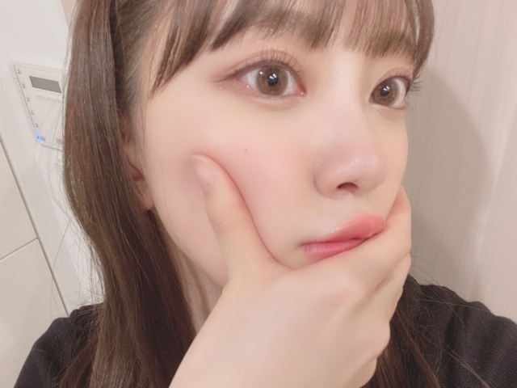
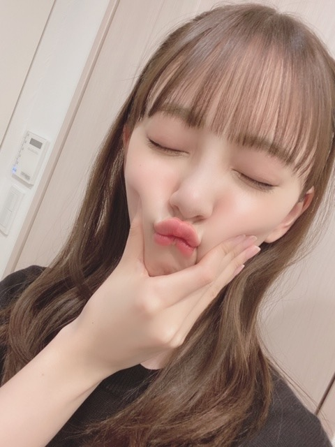

2020/0301Sun青カビタイプ
こんにちは〜
うちでは犬を2匹飼っていますがわたしは猫顔です。
でもうちの犬に似てるってよく言われます。
特にニコル。ニコルは写真フォルダの"ネコ"の一覧に振り分けられていました。
チワワなんですけどね。
だからまあニコル=チワワ=猫=私ということで！
純奈には、今の顔ニコルやんって頻繁に言われます。
似てるみたい。
そうそうこの間
真夏さん、りんごさん、みなみ、まあや、さくらちゃん、かずみさんと空き時間にパージっていう映画を観ました☺︎
私が個人的に観たくて楽屋で観ていたら人が集まってきて気づいたらみんなでワーワー言いながら観賞会してました。笑
いや〜面白かった〜！！
メンバーといると大家族みたいで楽しいです☺︎
あとはおうちで
MEGザモンスター
IT 最新章
を最近は観ました！
何回観てもMEGザモンスターのジェイソンステイサムが男前なんですよね。命をかけて人を守り助けられる人って素敵。
私も強い女性になりたい...

髪色明るくなってきた！
暗くしよーと。
あ、ちなみにどんなが髪色が見たいですか？
やったことない髪色にもしてみたいなぁ

そして最近またほっぺたがぷにぷにしてきたので
野菜中心生活を心がけようと思います。
スムージーも作ろう！
あとダンスの自主練も始めたのでたくさん汗をかいて痩せつつダンススキルをも、あげたいと思います☺︎

早くアナスターシャのMVを観てほしいな。曲も聞いてほしいしパフォーマンスも観てほしいです。
大好きな2期生が詰まっていて特別なものになりました。
では。
こんにちは〜
うちでは犬を2匹飼っていますがわたしは猫顔です。
でもうちの犬に似てるってよく言われます。
特にニコル。ニコルは写真フォルダの"ネコ"の一覧に振り分けられていました。
チワワなんですけどね。
だからまあニコル=チワワ=猫=私ということで！
純奈には、今の顔ニコルやんって頻繁に言われます。
似てるみたい。
そうそうこの間
真夏さん、りんごさん、みなみ、まあや、さくらちゃん、かずみさんと空き時間にパージっていう映画を観ました☺︎
私が個人的に観たくて楽屋で観ていたら人が集まってきて気づいたらみんなでワーワー言いながら観賞会してました。笑
いや〜面白かった〜！！
メンバーといると大家族みたいで楽しいです☺︎
あとはおうちで
MEGザモンスター
IT 最新章
を最近は観ました！
何回観てもMEGザモンスターのジェイソンステイサムが男前なんですよね。命をかけて人を守り助けられる人って素敵。
私も強い女性になりたい...

髪色明るくなってきた！
暗くしよーと。
あ、ちなみにどんなが髪色が見たいですか？
やったことない髪色にもしてみたいなぁ

そして最近またほっぺたがぷにぷにしてきたので
野菜中心生活を心がけようと思います。
スムージーも作ろう！
あとダンスの自主練も始めたのでたくさん汗をかいて痩せつつダンススキルをも、あげたいと思います☺︎

早くアナスターシャのMVを観てほしいな。曲も聞いてほしいしパフォーマンスも観てほしいです。
大好きな2期生が詰まっていて特別なものになりました。
では。
2020/03/01 12:16


コメント(361)
未央奈が猫顔なのわかる。目が大きくて猫っぽいよね。ニコルも目が大きくてクリッとしてるから猫っぽいかもね。
未央奈は映画好きだねえ。そのメンバーでワーワー言いながら鑑賞会って面白そう。MEGザモンスターも観てみたいな。
僕はまたシンプルに黒髪の未央奈が見たいかなあ。
そんなにほっぺプニプニしてるの？全然痩せて見えるけど、健康志向は良いことだよね。ほっぺつまんでるの可愛い。
アナスターシャのMV早く観たいな。公開が楽しみ！
では！
空き時間にメンバーと映画鑑賞いいですね。
写真可愛いですね。
私の好きな髪型は、映画『パルプ・フィクション』のミア！
暗めカラーだけどブルージュとか似合いそう！
ていっても何色でもかわいいけどねー！
カーキアッシュみたいな髪色の
堀ちゃん見てみたいです！！！
今の髪色も可愛いけどね〜o(^o^)o
今日も頑張ってねー！
みおちゃんは猫顔ですよね～♡
でもニコルちゃんにも似てますよ！
性格的にも犬っぽくて誠実ですね✨
メンバーと映画を観て素敵ですー！
ダイナミックな映画が好きですね☆
明るい髪色も春らしくて好きです！
野菜中心の生活も素晴らしいです✌
アナスターシャMV凄く楽しみです！
ジャケ写もとっても魅力的ですね♡
宇宙も魅了されてしまいますよ～☺
パージ面白いね
it、megザモンスターも
そう言われると未央奈ちゃん猫顔 やん。。
アナスターシャ早く聴きたいな神曲の予感しかしない
未央奈ちゃん可愛い
そろそろ久しぶりに黒髪ボブの未央奈ちゃんも見たい！♡けど未央奈ちゃんの好きな髪型、髪色にしてください！
乃木坂ちゃんの楽屋の雰囲気楽しそう笑エピソード聞くと、本当に仲良いんだなあ、素敵なグループを応援できてしあわせだなあ、って思います☺︎
そしてアナスターシャ、MVでるんだね！！！とてつもなく楽しみにしてます☺︎
体調気をつけてください〜(>_<)
アナスターシャ楽しみにしてます！
「アナスターシャ」のMVやパフォーマンスが見れるの楽しみにしてるよ！みおたん、大好き！！
メンバーと鑑賞とか仲の良さが伝わってくる！！
映画とかあんまり見ないけど白石さんが出てる映画は見たいなと思ってる。笑
もー未央奈ちゃんは見たかな？
茶髪の未央奈も好きだな。けどやっぱ黒がいい！！とか言ってみる。
アナスターシャ早くみたいな！！めっちゃ楽しみ！！
どんな感じなんだろ。。。
2期生楽曲は個人的に好き！！
寒いから体調には気をつけてね！
これからも応援してます！
俺的には、今の茶髪が好きだけど、赤未央奈も見てみたいかな(๑˃̵ᴗ˂̵)
バスラお疲れ様!!
2期生楽曲のMV楽しみ！
高めのツインテールを見たい！
またね！
体調は大丈夫ですか。
外出を控えるよう要請が出ているので
家に居ることが多く、昔のライブ等をみています。
でも映画もいいですね！
いい邦画があれば教えてください！
これからも未央奈ちゃんらしく
頑張ってくださいね！！！
応援しています！！！
ニコル？……あの、ビームを出すモデルで、アットホームであったの、、
藤田ニコルだよ！
アナスターシャ？
あ～、、ロシア語かな？
声優の上坂すみれさん アイマスのロシアのハーフの子で、アナスタシアっていう、、
そっちじゃねぇよ！
( ´∀｀)Σ⊂(ﾟДﾟ )
蘭世ちゃん、りんごさんあたりに聞いたら何の事か教えてくれるはずです。
アナスタシアが、どういう意味だったか思い出せない。。
ブログ写真の未央奈ちゃん、かわいい//
肌色も良いし、眼もパッチリで(//∇//)
本当に、キレイの為に努力されてるんだなと。
(*´-`)
((((*゜▽゜*))))
ちょっと金髪とか見てみたいwww
でも黒髪の未央奈好きだなぁwww
さっきまで「リメンバーミー」を見て、
泣いてました( ノД`)…
家族って大事だね♪ヽ(´▽｀)/
野菜は葉野菜を中心にね！根菜は糖分が多いからね！
体調に気を付けてね
んじゃね～！Σ⊂(ﾟДﾟ )
多少のプニプニは可愛いですまない？(//∇//)
ああ確かに、あのハ、じゃねぇや、笑
あの御方、笑 強くてカッチョイイっすよね
うん、俺も好きです。笑
ああでも、まあそうは言うても、笑
「セルラー」
この映画のジェイソンステイサムは
もうそれこそ、笑 もう思いっ切り
悪役なんでござ〜ますけどね〜、
へぇ、まあ、夢を壊す様でわりぃっすけど
笑
（↑うるせぇよ、誰だよお前。笑）
ああ後は、ジェイソンステイサム言うたら
まあ俺ぁ、まあ個人的には、
「デスレース」この映画とかも好きです。笑
まあ、有名所とかを省いて言うと。笑
はい、って事で、
はいもう只そんだけっす。笑 はいほな。笑
って言うか、そりゃーそうと、
そもそもMEGザモンスターって何だ？
（うん、わし↑
この映画もう全く知らん。笑）
はいもう只そんだけ。笑 はいほな。笑
どの髪色でも似合うと思うけど、暗めのアッシュはどう？
似合うと思う〜
体調に気をつけて仕事頑張ってね
堀ちゃん猫顔かな？
う～ん？
猫顔かな☺
ワンちゃんいると確かに犬顔って人俺も知ってる人でおるけどね☺
あと髪色、今の色綺麗と思うよ✨
ぷにゅぷにゅも俺は好きです☺
皆で映画良いな～
楽しいやん☺
息抜きも大切やし✨
力まず自然体が一番やないかな？
ではではまたね✨
体調気をつけてくださいね✨
ほなね、堀ちゃん☺
アナスターシャ楽しみにしてる！
なんだその写真は、、、
かわいすぎじゃないかぁぁぁぁあ
犬は飼い主に似ると言いますからね。
本能的に飼い主が自分に似た犬を選んでいる、という説もあるようです。
どちらにせよ、愛犬家にとって似てると言われるの嬉しいですよね。
映画は様々な物をもたらせてくれるから、欠かせないですよね。
自分磨きのためにも、沢山観たいですよね。
もう春みたいなものだから、明るくしても良いかなと思います。
でも個人的に明る過ぎなのはあまり好みではないかな。
やや明るめに赤を入れるのはいかがですか？
ダイエットとダンスの自主練頑張って欲しいです。
アナスターシャ楽しみです。
その想い受け止めたいです。
頑張って行きましょう！
まちがいさがし良い曲ですよね〜
未央奈さんが似合うと思う髪型は、映画『パルプ・フィクション』のミアです！
ではまたね！
今日は乃木中だー！楽しみー！
わたしはこれから春になるからピンクブラウンにしたよ！
まだ暗めだけどもう少ししたら色味が出ていい感じになるはず！
アナスターシャ楽しみにしてるね(^^)
明るい髪色もめちゃめちゃ似合ってる！
可愛い！
またコメントします！
ブログ更新、ありがとうございます♪
コメントが久しぶりになっちゃいました。
ごめんなさい…
1つ前、2つ前のブログと併せて、コメントしようと思います‼︎
2期生の単独ライブ、中止になってしまって、とっても残念です。
何よりも、2期生ライブをやるって決まった時、未央奈がすごく喜んでいたのを知っているし。
さぞ無念だろうなあって。
TGCも無観客という特別な対応で、普段とは随分違う雰囲気に戸惑ったことと思います。
でも、今は国民全体が一丸となって問題に対処しないといけない時。
ここが踏ん張りどころですよね‼︎
それぞれ我慢しなければならないことも多いけど、お楽しみは少し先延ばしにして、みんなができることをやって、なんとかこの難局を切り抜けていきたいですよね♪
転んでも立ち上がる。
向かい風の方が燃える。
さすが、嵐の2期生ですね…‼︎
2期生ライブ、きっと実現しますよ‼︎
応援してます♪
さて、今回のブログで話題のニコル君。
猫顔のワンちゃんなんですね(笑)。
自分は、ワンちゃんみたいな性格の猫ちゃんを飼ってます(笑)。
『猫は気まぐれ』、『何を考えているか分からない』とよく言われますが、うちの子は常に従順で、何を考えているかはすぐ分かります♪
結局、性格はその子それぞれですね‼︎
さて、少し仕事にも余裕が出てくるかもしれないけど、くれぐれも体調には気をつけて、頑張ってください‼︎
ではでは、また。
今日も未央奈にとっていい1日になりますように♪
ストイックな堀ちゃん見習って私も頑張るね〜
未央奈ちゃんはどんな髪型も似合うと思います♫
新曲めっちゃ楽しみです！
体調に気を付けてこれからも頑張ってください！
アナスターシャの曲もmvも楽しみ！公開されたらたくさん聞くね！
髪色は黒が見てみたいな〜
あんまり無理しすぎないでね〜
好きですっっ
ああ、じゃあもう冗談は抜きにして、
ああ、ジェイソンステイサム言うたら、
まあ俺ぁ
「セルラー」「デスレース」とかが好きです
まあ、有名所とかを省いて言うと。
はいもう只そんだけ。はいほな。
1枚目の写真かわいすぎた
髪色かぁ〜、もうすぐ春だから
今のモカ（？）とかの茶系カラーに
桜 みたいなピンクっぽさを合わせたカラーが
見てみたい！！
では ななみ
コメントする